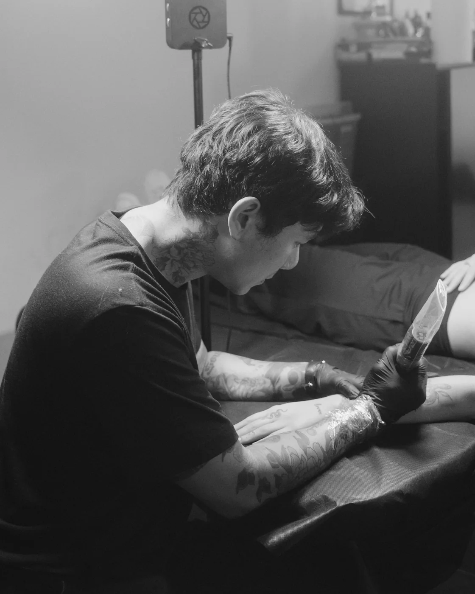
tat.it.too
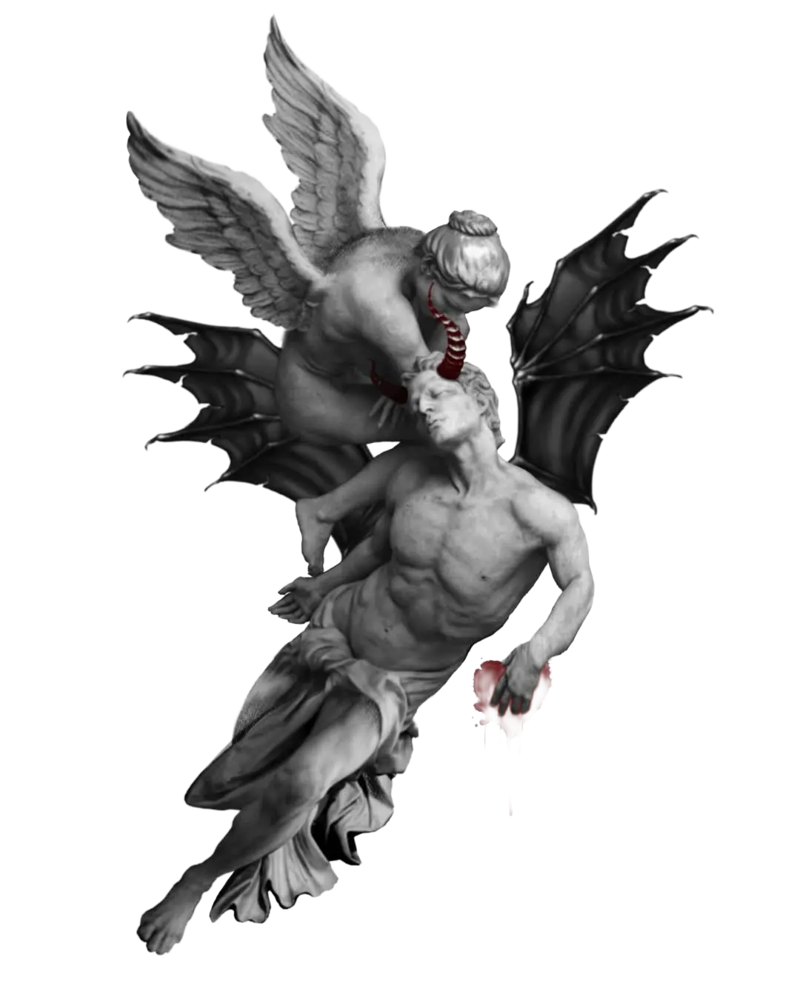
Patchara is a Chicago tattoo artist working in fine line and realism at Sappe Sin Studio. Born in Bangkok, he has drawn for as long as he can remember, studied art at university in Thailand, and moved to the United States in 2019. He taught himself to tattoo during the 2020 lockdowns, spent four years as a resident artist, and opened Sappe Sin Studio in 2025.
Pet portraits started with a friend who had just lost a pet. Seeing what that tattoo meant to them changed how he saw the work: a portrait on skin can carry a lot of love. It is now the thing he is best known for, alongside fine line.
He loves micro realism for its precision, and is increasingly drawn to larger pieces where a whole arm or back can hold one story. If you have a big idea, bring it.
Latest works
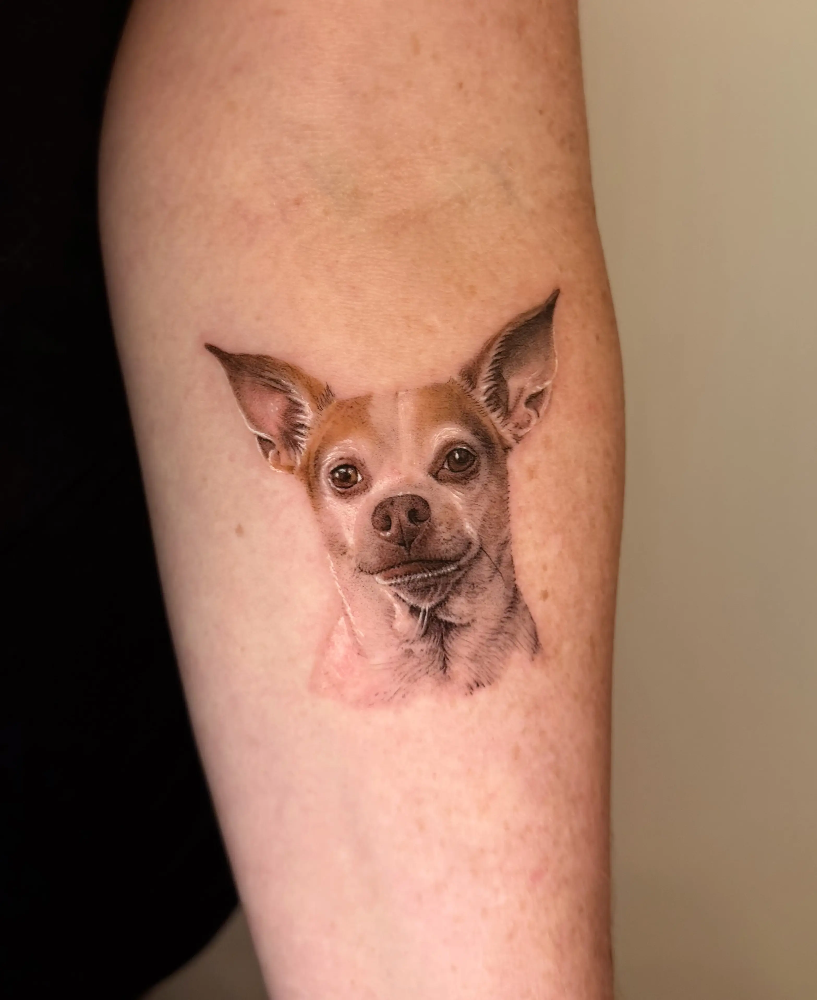
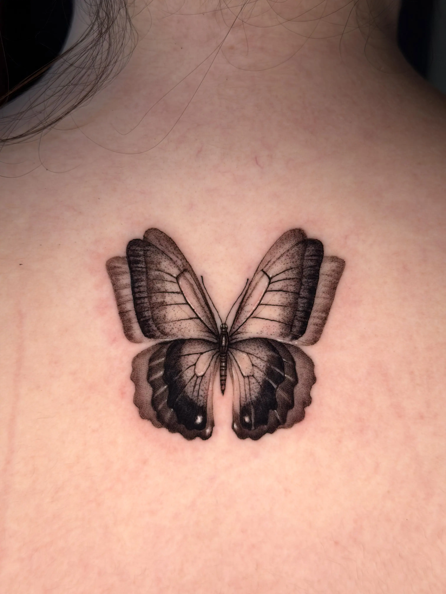
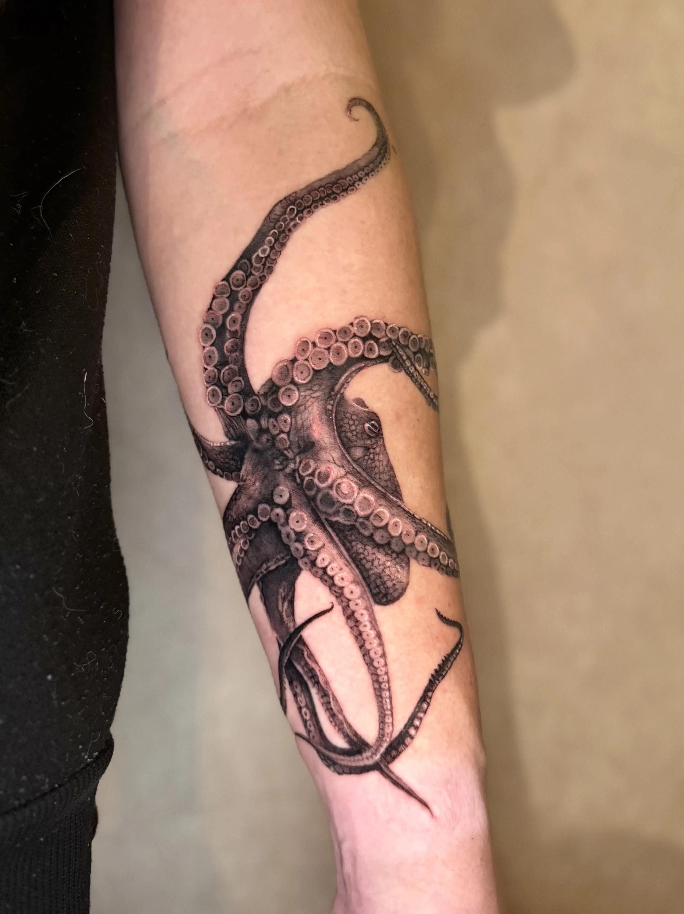
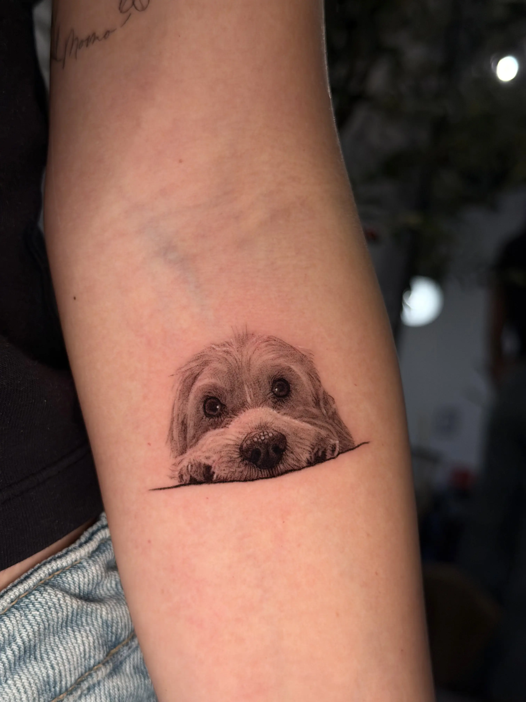
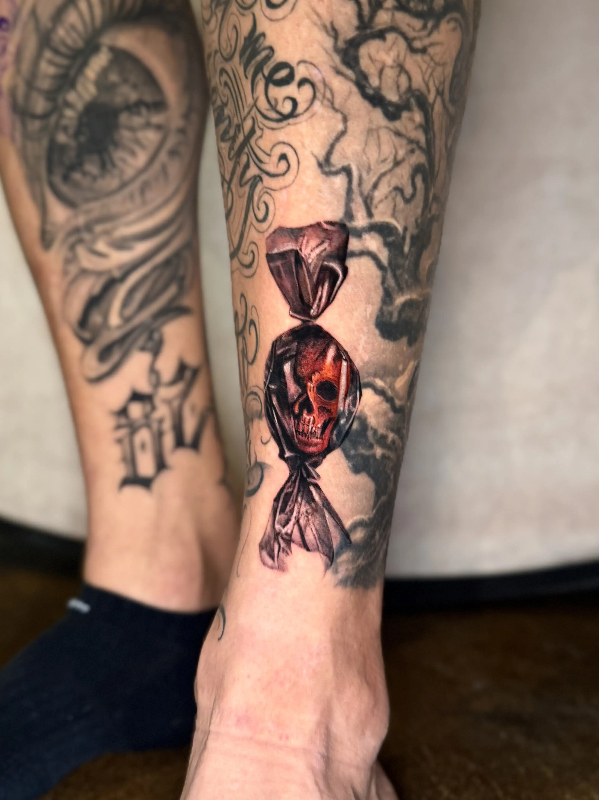
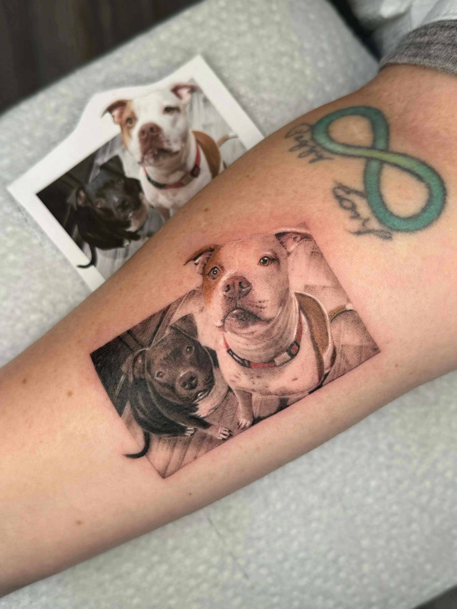
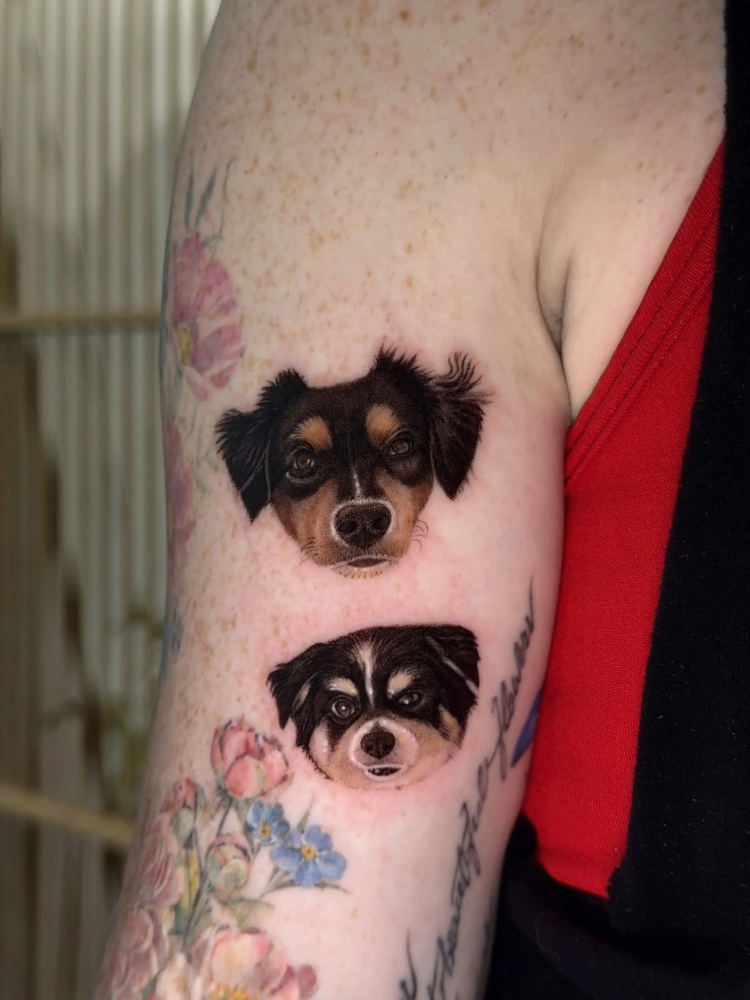
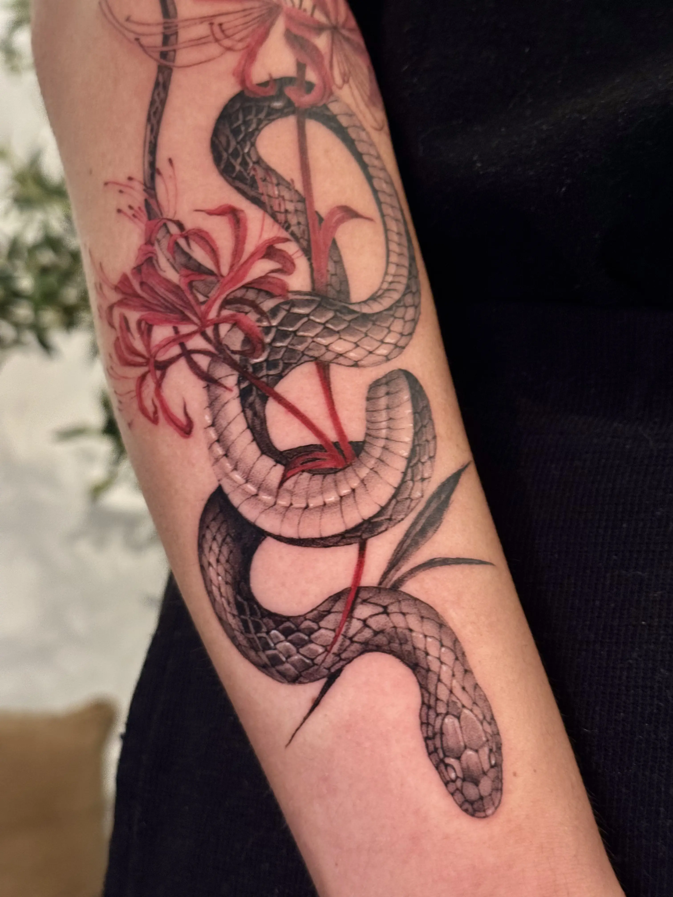
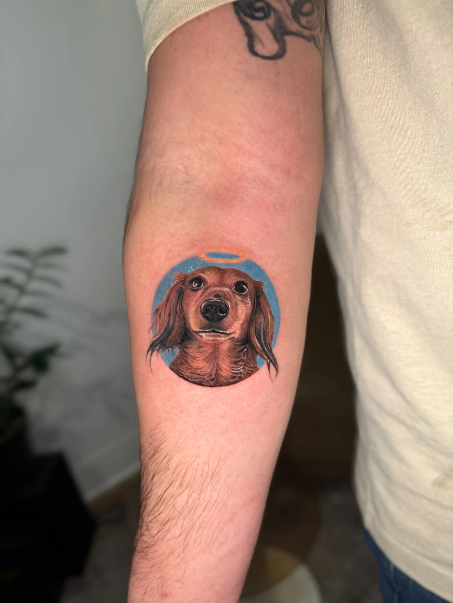
FAQ
How do I book?
Send the booking form with your idea, a placement photo and the size you want. I'll reply by email so we can settle the design, date and time. Your spot is confirmed once the deposit is in.
Is there a deposit?
Yes. A $200 deposit holds your appointment and comes off the final price of the tattoo. Send it by Zelle, and add the date and time of your appointment in the note if you like. Deposits are non-refundable.
What if I need to reschedule?
Email me at least 48 hours before your appointment and your deposit moves to the new date. With less than 48 hours' notice, or for a second reschedule, a new $200 deposit is needed. A deposit can only be moved once.
Where is the studio?
Sappe Sin Studio, 1134 W Diversey Pkwy, Chicago, IL 60614.
Show on Google MapWhat do you specialize in?
Fine line, pet portraits and micro realism. I'm also taking on larger pieces, so bring the big ideas too.
How do I look after my tattoo?
Keep the bandage on for two to three days, then a thin layer of ointment twice a day. No swimming, sun or soaking for two weeks.
Read the aftercare guidenow